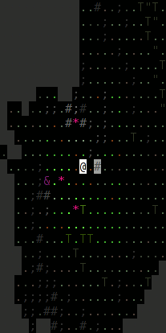
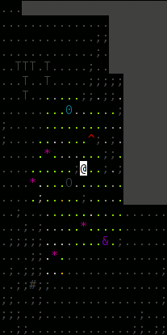
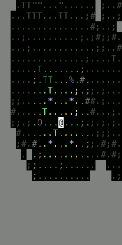
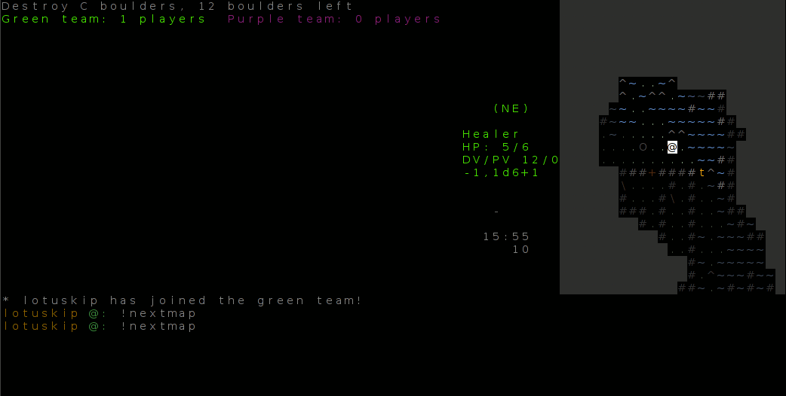

Only the client program uses any necessary visual output; the server can be run even outside of any terminal whatsoever.
The yuxtapa client has mainly been tested on urxvt (rxvt-unicode) and xterm. It is designed for terminal emulators that provide at least 88 colours and 256 colour pairs, and moreover allow changing the colour RGB values. There is a fall-back function for more simple terminals (256 or 16 fixed colours) such as xterm; the game is playable but looks more crude.
For comparison, here are three screenshots, the first with full, modifiable colours (the way the game 'should' look),
the second with nonmodifiable but numerous colours, and the last one with
only 16 colours (not the default 16 xterm colours):



Playing with only 16 colours or with immutable 256 colours is quite possible, but most people will probably prefer the full colour mode. Terminals that have been tested to work with full colours 'out-of-the-box':
The cursor is usually placed in the middle of the view, meaning that it is where you see your own PC when playing, or the followed PC when following. A typical "block" cursor can be problematic here, as it can hide background colour indicators from you. Thus you might want to change the cursor into an underline instead. Ways to do this vary depending on your terminal; at least both xterm and urxvt accept the argument '-uc' to enable an underline cursor, and to make it permanently so you can add "[xterm/urxvt]*cursorUnderLine: true" to your .Xdefaults.
Using UTF-8 compliant terminals and fonts with UTF-8 glyphs is recommended. It is not necessary for the terminal to support Unicode, but if other players have Unicode nicks or type Unicode into the chat or if the server sends some Unicode messages, this might produce annoying garbage in a client terminal that doesn't support UTF-8.
The absolute minimum terminal size for the client is 80x24. Anything larger goes, and somewhat larger is recommended, because with the minimum screen the chat box (see Client screen) is only one line high, which makes the chat feature annoying to the point of being useless.
If you find the 'tallness' of everything an issue, try changing the font
of your terminal into something more square. This can help remove the illusion
that things to the left and right appear to be 'closer' than things that are
up or down. Unfortunately, good square fonts are hard to come by, especially
if you want full unicode support. One decent square option is the font called 'cursor'.
Here is a screenshot from an old version of yuxtapa:
